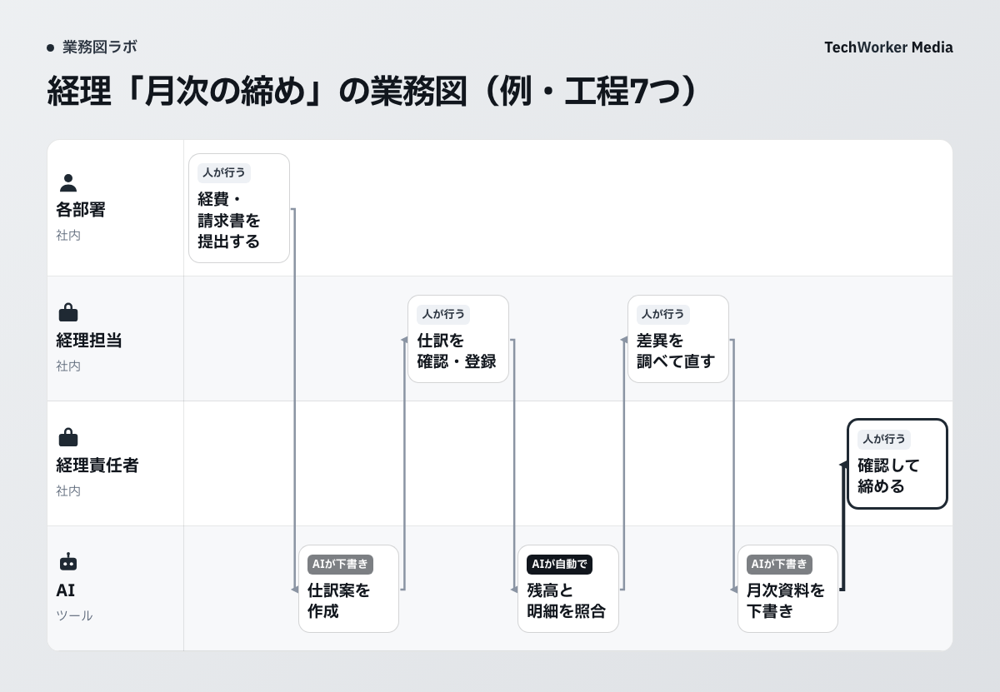
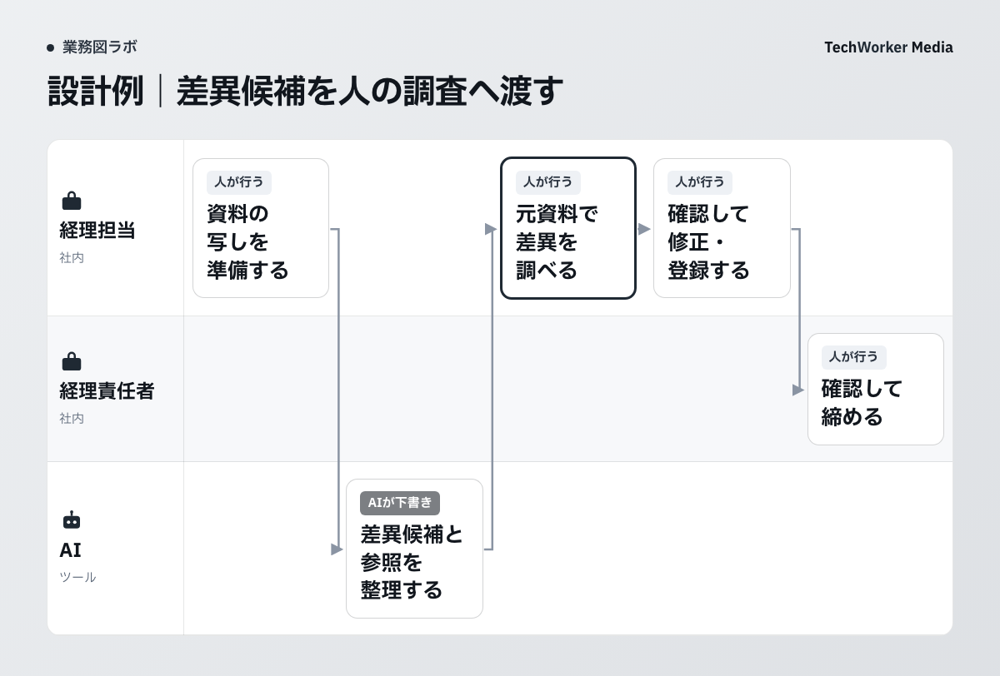

公開図では、登録と締めの判断を人に残しています
月次資料が早く届いても、差異の理由が分からなければ締められません。AIに渡す作業を決めるときは、資料を作る工程と、その数字を確定する工程を分けます。
TechWorkerの「部署別 業務図テンプレート集」にある経理の図を見てみます。これは一般的な流れをもとにした設計例です。TechWorkerの経理で稼働させた記録や、効果測定の結果ではありません。

図は、各部署が経費・請求書を提出するところから始まります。AIが仕訳案を作り、経理担当が確認して登録します。その後に残高と明細を照合し、差異を人が調べて直します。最後はAIが月次資料を下書きし、経理責任者が確認して締めます。
見る場所は、人の帯に戻る矢印です。仕訳案の後には登録、照合の後には差異の調査があります。AIが作業を終えた時点と、経理が結果を確定した時点を分けています。
図の「AIが自動で」は、任せ方の候補を示す札です。特定製品の照合精度や、接続済みの会計ソフトを示していません。この図だけで本番の自動実行を始める判断はできません。
先に決めるのは、読み込む資料と書き換えない範囲です
最初の試用は、確認済み資料の写しを使う範囲に絞ります。会計ソフトへの登録や既存データの修正は、試用の対象から外します。
公開テンプレートには、AIが会計ソフトの登録内容を書き換えない条件があります。確認前の資料も共有しません。これを自社で使う場合は、どの帳票を読むか、どこへ出力するかまで書き添えます。
たとえば、対象月の明細と残高表を渡す設計なら、双方の対象期間をそろえます。科目名や集計単位が違う場合は、対応関係を経理担当が確認します。AIが不明な対応を推測で埋めた状態では、照合結果を確定しません。
次は、本記事で提案する試用範囲の記入例です。現在のTechWorkerの経理手順ではありません。自社の規程、契約、保存先の条件に合わせて置き換えてください。
| 決めること | 試用時の記入例 |
|---|---|
| 対象資料 | 対象月と版を確認した、明細・残高表の写し |
| 作るもの | 仕訳案、差異候補の一覧、月次資料の下書き |
| 任せない操作 | 会計ソフトへの登録、登録内容の修正、資料の共有 |
| 止める条件 | 対象月や単位が不明、資料が不足、資料間で数値が一致しない |
| 戻す相手 | 経理担当。締めの判断は経理責任者 |
照合の差異は、元資料と一緒に人へ渡します
差異が見つかったら、その理由を確認する工程へ渡します。AIの出力には、確認した元資料と未確認の項目を添えます。

残高と明細に差があっても、その原因は図から分かりません。入力漏れなのか、対象期間の違いなのかを、元資料へ戻って調べる必要があります。理由が確認できないまま帳簿の数値を合わせる操作は、AIへ任せません。
差異候補を受け取る記録には、対象月、資料名と版、比較した項目を書きます。さらに、差異候補、参照箇所、確認者、調査状況を残します。AIが示した理由は仮説として扱い、確認できた理由と区別します。
記録例なら、「対象期間がそろっているか未確認。担当者が元帳と照合する」と書けます。「解決済み」と記すのは、担当者が根拠を確かめた後です。これは引き継ぎ方の例であり、特定の会計上の判断を示すものではありません。
担当者が不在のときに止まる場所も決めます。未確認のまま月次資料を確定せず、確認待ちの置き場所と代わりの確認者を指定します。資料づくりの進捗と、締めの完了は別々に記録します。
試すときは、完成した資料との違いを確かめます
試用では、登録も共有もしない環境で出力を確かめます。人が確認済みの資料と照らし、見落としや修正の内容を記録します。
ここからは本記事の試用案です。使うAIサービスに資料を渡せるか、経理責任者と情報管理の担当者が先に確認します。契約上の利用条件や保存条件が確認できない場合は、資料を渡す前に止めます。
試す対象は、確認済みの一つの月と一つの資料群から選びます。元データは保持し、AIの出力は別の保存先へ置きます。確認者は、出力の数値と参照箇所が対応しているかを元資料で見ます。
差異を見つけた件数だけでは、良し悪しを決められません。存在する差異を見落としていないか、差異がない箇所を候補にしていないかも確認します。正解を確かめられる資料がない場合は、検証の条件が足りません。
確認にかかった時間と、直した箇所も残します。資料作成が早くなっても、人の調査や修正が増える場合があります。工程ごとに結果を見て、同じ範囲で試すか、任せる作業を狭めるかを決めます。削減率や精度は、この試用案から算出できません。
自社の締めで止まる工程から書き出します
まず、提出待ち、差異調査、責任者の確認待ちのどこで止まるかを書きます。その工程の入力、出力、担当を確かめてから、AIへ任せる候補を選びます。
資料がそろわないことが原因なら、AIの資料案を増やすだけでは解決しません。誰から何を受け取るかを業務図に書き、次の担当へ渡せる条件を決めます。読み取れない資料や例外が多い場合も、その条件を確認してから試用へ進めます。
ギョウムズAIは、聞き取り・資料・業務の記録の3つから、AIが部署の業務図を作るサービスです。お客さまには聞き取りの案内を配っていただきます。担当者が1人15分ほど答え、AIが作った図を確かめて任せる仕事を決めます。締めの判断や会計処理の責任を代わりに引き受けるものではありません。
出典と、本記事で提案した範囲
- TechWorker「部署別 業務図テンプレート集」。2026年10月2日公開。第2章の経理例、第3章の記入欄、第4章の札の付け方を、2026年10月12日に確認しました。
経理の図と禁止操作は公開資料に記載された設計例です。試用の資料範囲、差異候補の引き継ぎ記録、検証手順は本記事の提案です。会計・税務の個別判断、製品の精度、接続可否、実測効果は検証していません。